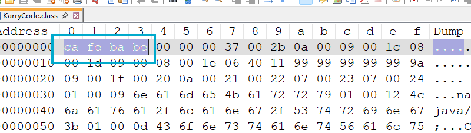
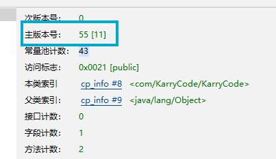
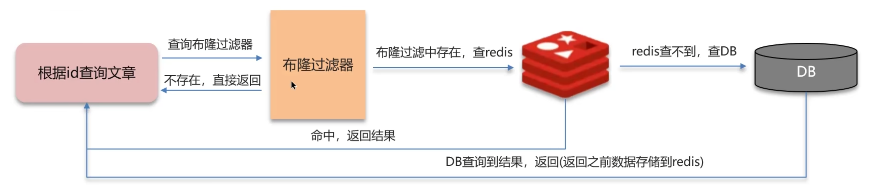
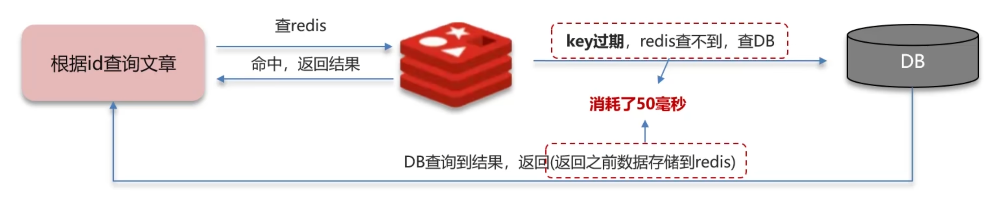
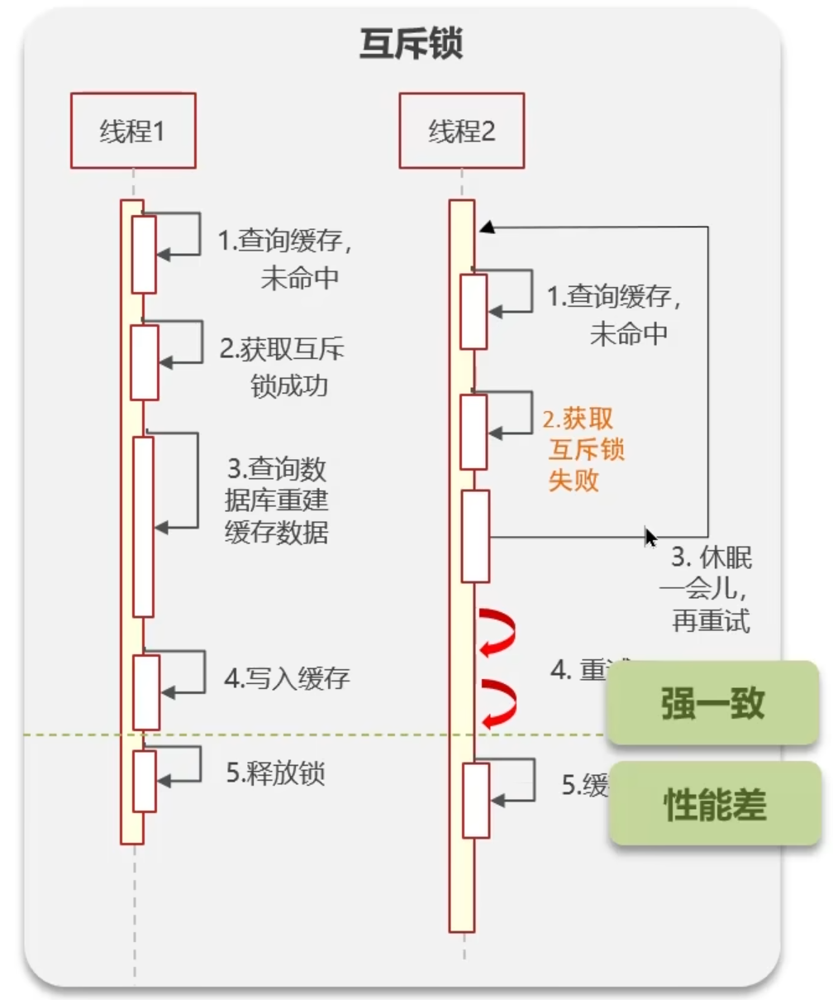
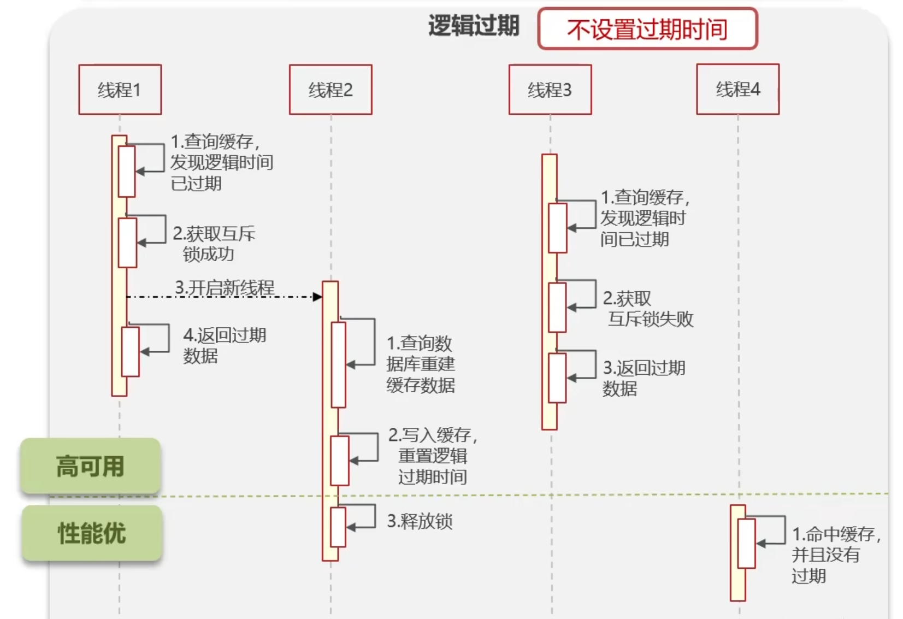
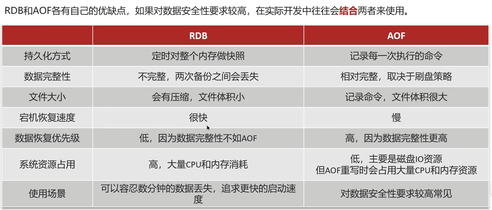
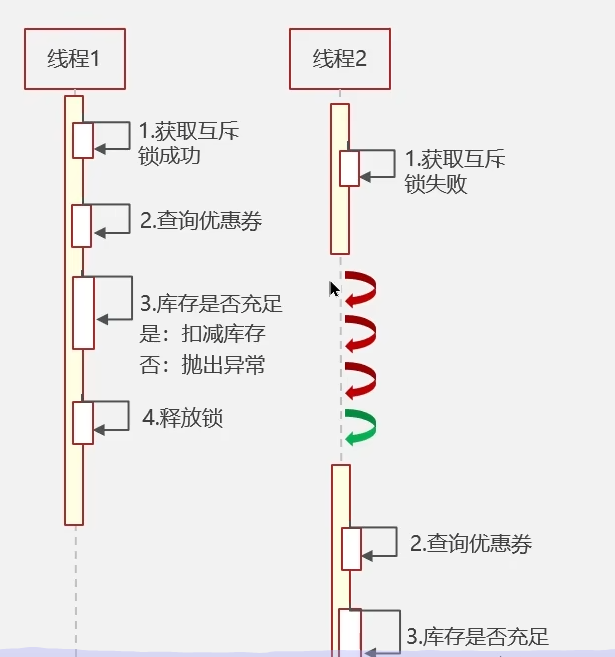
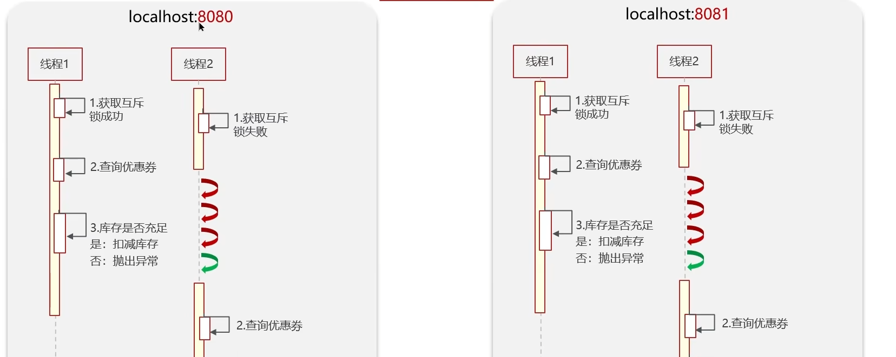
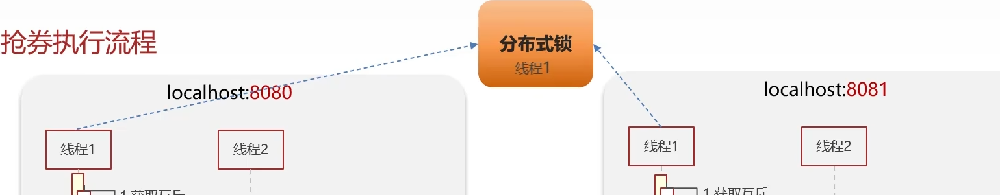

# Java 虚拟机
# 认识 JVM
JVM 的功能：
- 解释和运行：对字节码文件中的指令实时的解释成机器码，让计算机执行。
- 内存管理：自动为对象、方法等分配内存，具有自动的垃圾回收机制，回收不再使用的对象。
- 即时编译：对人点代码进行优化，提升执行效率。
Java 语言如果不做任何优化，性能是不如 C 和 C++ 的，因为 Java 虚拟机在解释，而 C 不一样，C 可以直接编译成目标可执行的机器码，无需解释，Java 这样做的主要目的是为了跨平台，这也铸就 Java 今天的地位。
什么是即时编译，为什么需要即时编译？
Java 代码先被编译成字节码，JVM 解释执行字节码，纯粹的解释执行速度慢（每次执行都要翻译），不如 C/C++ 直接编译成机器码，为了既保持跨平台能力，又提高执行速度，JVM 引入了 JIT 编译器。JVM 会统计每个方法被调用的次数，当一个方法或循环被频繁执行（超过一定阈值，如 10,000 次），JVM 将其标记为 “热点代码”。JIT 编译器将这些热点代码直接编译成本地机器码，并缓存在代码缓存中。再次调用该方法时，JVM 直接执行已编译好的机器码，无需重新解释，速度大幅提升。
# 字节码文件
- 基础信息：魔数、字节码文件对应的 Java 版本号、访问标识（public final 等）、父类和接口
- 常量池：保存了字符串常量、类或接口名、字段名，主要在字节码指令中使用
- 字段：当前类接口声明的字段信息
- 方法：当前类接口声明的方法信息，字节码指令
- 属性：类的属性，比如源码的文件名，内部类的列表等
# 什么是魔数？
魔数的核心作用就是快速、可靠地标识文件类型。

其中 CAFEBABE，就是用来标识这个文件是 Java 字节码文件的。
# JDK 版本号
JDK1.2 是 46，在 JDK1.2 之后每升级一个版本就加 1，55-46=9，9+2=11，就是 JDK11。

JDK 版本号主要用来检查你的 Class 文件与当前运行的环境是否匹配。
# 常量池
public class KarryCode { | |
public final String nameKarry1 = "KarryCode"; | |
public final String nameKarry2 = "KarryCode"; | |
public static void main(String[] args) { | |
int i = 1; | |
i += i += ++i + 4.4 + i;//1 1 2 4 2 | |
System.out.println( | |
i | |
); | |
} | |
} |
当出现两个常量是同一个串的时候，Class 中会为我们自动分配同一个目标。
# 字节码方法
i++：
0 iconst_0 | |
1 istore_1 | |
2 iload_1 | |
3 iinc 1 by 1 | |
6 istore_1 | |
7 getstatic #5 <java/lang/System.out : Ljava/io/PrintStream;> | |
10 iload_1 | |
11 invokevirtual #6 <java/io/PrintStream.println : (I)V> | |
14 return |
++i：
0 iconst_0 | |
1 istore_1 | |
2 iinc 1 by 1 | |
5 iload_1 | |
6 istore_1 | |
7 getstatic #5 <java/lang/System.out : Ljava/io/PrintStream;> | |
10 iload_1 | |
11 invokevirtual #6 <java/io/PrintStream.println : (I)V> | |
14 return |
i++：iload_1, iinc 1 by 1
++i：iinc 1 by 1, iload_1
这两个最大的区别是 load 的顺序，到底是先加载，还是先自增。先 load 就是先把数字拿出，放到操作数栈中，然后直接在局部变量数组表自增。先自增是直接在局部变量数组表自增，然后再拿到操作数栈中。
# 算法
# 二分查找
# 基础版
需求：在有序数组 内，查找值
- 如果找到返回索引
- 如果找不到返回
public class BinarySearch { | |
public static int binarySearch(int[] arr, int target) { | |
int left = 0; | |
int right = arr.length - 1; | |
while (left <= right) { | |
int mid = (left + right) >>> 1; | |
if (arr[mid] == target) { | |
return mid; | |
} | |
if (arr[mid] < target) { | |
left = mid + 1; | |
} else if (arr[mid] > target) { | |
right = mid - 1; | |
} | |
} | |
return -1; | |
} | |
public static void main(String[] args) { | |
int[] arr = {7, 13, 21, 30, 38, 44, 52, 53}; | |
System.out.println(binarySearch(arr, 60)); | |
} | |
} |
i<j行不行？不行，因为当i=j的时候也可能成为查找的对象。(left + right) / 2合理吗？其实是有点不合理的，如果数值长度为整数最大值，且左边界的索引即将向右更新的话，那么left + right是会超越正整数的范围，超越之后，由于 Java 会把二进制的首位视为符号位，他会翻转为一个负数，索引是没有负数的，这就产生了错误。那么怎么改进？请使用无符号右移的方法。
# 改动版
public static int binarySearchAlternative(int[] arr, int target) { | |
int left = 0; | |
int right = arr.length; | |
while (left < right) { | |
int mid = (left + right) >>> 1; | |
if (arr[mid] == target) { | |
return mid; | |
} | |
if (arr[mid] < target) { | |
left = mid + 1; | |
} else if (target < arr[mid]) { | |
right = mid; | |
} | |
} | |
return -1; | |
} |
这是把双闭区间换成左闭右开了。
# 算法评价指标
# 面试
# Redis
- 缓存
- 分布式锁
- 计数器
- 保存 token
- 消息队列
- 延迟队列
常见内容
缓存：击穿、雪崩、双写一致、持久化、数据过期、淘汰策略
分布式锁：setnx、redisson
一些数据类型等，主从、哨兵、集群、事务，以及为什么 Redis 这么快？
“我看你做的项目中，都使用到了 Redis，你在最近的项目中哪些场景使用了 Redis？”，建议结合业务回答，这个问题通常用来引出其他的子问题。缓存和分布式锁。
# 缓存穿透？怎么解决？
缓存缓存穿透是去查询一个不存在的数据，此时一般先去 Redis 拿，Redis 拿不到就去数据库拿，当然你肯定是拿不到的，也就返回为空了，但是这个空数据并不会向 Redis 中缓存，所以以后再有这样的请求时依然要走这样的老路，最终导致数据库服务器宕机（这个类似击穿），这种情况通常是遭遇了攻击。
如何解决呢，方案一是就算我们查到的的是空数据，也把这个数据缓存到数据库中，这样每次请求就会打到 Redis 了能缓解一些，方案二是，使用布隆过滤器，布隆过滤器主要用于检索一个元素是否在集合中，用 redisson 的布隆过滤器，它的底层机制是先去初始化时先去初始化一个比较大的数组，里面存放 0 或 1。在一开始是全是 0，当一个 key 来了之后，进行三次哈希计算，然后结果对余下设定的数组长度取模，得到的数组下标将 0 置为 1，这样三个数组位置就能表明 一个 Key 的存在。布隆过滤器也会产生一些误判，我们可以设置这个误判率，一般为 5%。

# 缓存击穿？如何解决？
缓存击穿是当缓存中的数据出现了过期，但是恰巧这个时候出现了大量的并发请求，导致这些请求由于在缓存中找不到相应的数据而去访问数据库，从而击垮数据库，这个现象叫缓存击穿。

解决缓存击穿有两种解决方案，一个是比较保守的要求数据强一致的分布式锁，另外一个是比较激进的强调高可用的逻辑过期。
首先分布式锁是，当一个请求（请求线程）出现时，它先会查询缓存，当然它肯定是没查到。因为数据已经过期了，这个时候他会去申请互斥锁，然后写入缓存，最终释放锁。与此同时，当另外一个请求线程出现时他也在缓存中查不到数据，它也会去查缓存，然后未命中，申请分布式锁，这个时候，已经被其他线程申请过了，它会先去休眠一会，然后重复上述过程，直到请求成功。

其次是逻辑过期，它的流程和上面的流程基本上是一样的，但是它会去新开一个线程来进行缓存更新，当然新线程也会去加锁更新，这个原线程会继续向下执行。注意！他会返回过期的旧数据，这个方法执行效率很高，但是会出出现不一致的问题。

一般来说涉及到金钱的问题，我们更倾向于使用分布式锁，而对于一些非核心业务，我们更倾向于使用逻辑过期。
# 缓存雪崩？怎么解决？
缓存雪崩是指在同一时段大量的缓存 Key 同时失效或者 Redis 服务器宕机，导致大量请求到达数据库，带来巨大压力。
解决方案是，给不同的 Key 的 TTL 添加随机值，利用 Redis 集群提高服务的可用性，还可以给缓存业务添加降级限流策略（降级策略可以作为系统的保底策略，适用于穿透、击穿、雪崩），可以给业务添加多级缓存。
# 穿透？击穿？雪崩？
我认为这三者是层层递进的，
穿透： 考验的是过滤能力（别让非法请求进来）。
击穿： 考验的是并发控制（别让重复任务压垮数据库）。
雪崩： 考验的是系统韧性（别让局部故障拖垮全局）。
# Redis 双写一致性
“Redis 作为缓存，mysql 的数据如何与 Redis 进行同步呢？”
一般来说有两种等级：
- 高一致性要求：加读写锁（共享锁 / 排他锁），共享锁就是读锁 —— 读时共享但不可写，排他锁就是写锁 —— 写时排他读与写的所有操作。这里使用 redisson 读写锁就可以。
- 要求延迟一致：如果能接收少许不同步的延迟，就可以采用异步同步的方案。
- 使用 MQ 中间件，当数据更新时通过 MQ 通知缓存删除
- 也可以使用 canal 中间件，不需要修改业务代码，伪装为 mysql 的一个从节点，canal 通过读取 binlog 数据更新缓存。
# Redis 的持久化
“Redis 作为缓存，数据的持久化是怎么做的？”
- RDB：Redis 数据快照，在某个时间点，把内存中的数据完整保存到磁盘（生成
.rdb文件），可能丢数据（两次快照之间的数据会丢） - AOF：追加文件，核心思想是把每一次写操作都记录下来（类似日志），appendfsync always 每次都刷盘，appendfsync everysec（默认，推荐），appendfsync no 交给操作系统

# 缓存过期策略
“假如 Redis 的 Key 过期之后，会立即删除吗”
-
惰性删除：设置该 Key 过期时，我们不去管他，当需要该 Key 时，我们再检查其是否过期，过期了就删除它，然后返回该 Key，优点是对 CPU 友好，缺点是对内存不友好。
-
定期删除：每隔一段时间，我们就对 Key 进行检查，删除里面过期的 Key（从一定数量的数据库中取出一定量的随机 Key 进行检查，并删除其中过期的 Key）
定期清理有两种模式
- SLOW 模式：默认执行频率为 10HZ，也就是秒执行 10 次，每次不超过 25ms，通过修改 redis.conf 可以调整这个次数
- FAST 模式：FAST 模式频率不固定，但两次间隔不低于 2ms，每次不超过 1ms。
Redis 的执行策略是惰性删除 + 定期删除两种策略配合使用。
# 数据淘汰策略
“假如缓存过多，内存是有限的，内存占满了怎么办？”
“数据库有 1000 万数据，Redis 只能存 20W, 如何保证 Redis 中都是热点数据？”—— 使用 allkeys-lru 最近最少使用策略，不是热点数据就自动被淘汰了。
“Redis 的内存用完了怎么办？”—— 这个主要取决于你使用淘汰策略，如果用的 noeviction，那直接就报错了。
- noeviction：不做任何淘汰，直到写满报错，默认 Redis 用的就是这种。
- volatile-ttl：按照设置的过期时间进行淘汰。
- allkeys-random：对于全部的 Key 进行随机淘汰（次先使用）。
- volatile-random：对于设置了 TTL 的 Key，进行随机淘汰。
- allkeys-lru：对于全部的 Key 采用最近最少使用策略进行淘汰（优先使用）。
- volatile-lru：对于设置了 TTL 的 Key，采用最近最少使用策略进行淘汰（有指定要求的数据）。
- allkeys-lfu：对于全部的 Key 采用最少使用频率的策略进行淘汰（短时高频数据）。
- volatile-lfu：对于设置了 TTL 的 Key，采用最少使用频率的策略进行淘汰（短时高频数据）。
# 分布式锁
“Redis 分布式锁，是怎么实现的？”（集群架构 + 秒杀应用）
我们先来讲讲为什么需要分布式锁，这分布式锁怎么来的。起初我们的项目是单体架构的，我们经常在关键的业务代码中加入 synchronized，如果这是单体的那么可行，加锁之后关键互斥访问。

当架构是微服务时就不行了，同实例互斥访问，当时遇到多实例的话就会产生下面这种情况：

在两个端口上的实例内互斥访问，跨实例就会出现资源争夺。他们需要共同使用一把锁，这把锁就叫 **“分布式锁”**

Redis 分布式锁是一种在分布式系统中实现互斥访问的机制，通常基于 SETNX，
# 获取锁 | |
SET lock_key unique_value NX EX 30 | |
# 释放锁（使用 Lua 脚本保证原子性） | |
if redis.call("get", KEYS[1]) == ARGV[1] then | |
return redis.call("del", KEYS[1]) | |
else | |
return 0 | |
end |
开源的 Redisson 是 Redis 分布式锁的成熟实现，内置了看门狗机制：
// Redisson Java 示例 | |
RLock lock = redissonClient.getLock("myLock"); | |
lock.lock(); // 自动续期，默认 30 秒 / 或者使用 tryLock 方法（） | |
try { | |
// 业务逻辑 | |
} finally { | |
lock.unlock(); | |
} |
Redisson 实现的锁时可